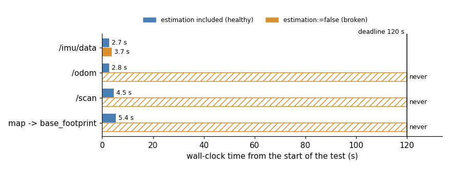

Beyond simulation · Project 14
Test the stack: a launch smoke test
| Goal | One test that starts the simulation headless, checks that the lidar scan, the IMU and the odometry arrive within a deadline at the rates the configuration asks for, and that map → base_footprint can be looked up. Run it with launch_test and under colcon test, then break the stack on purpose and read the failure. |
| Time | 1.5 h |
| Before you start | The stack from chapter 3 and the TF tree from chapter 5 (map → odom → base_footprint). |
| You will learn | how launch_testing works (a launch description that starts the system under test, ReadyToTest, and ordinary unittest test cases that run while it is up); why the rates are measured from message stamps (simulated time) and not from the wall clock; how to keep the pass/fail rules free of ROS so they can be unit-tested in milliseconds; what a failing smoke test prints, and how to go from that output to the missing launch file. |
Every terminal starts with:
cd go2-nav-sim
source env.sh
bash scripts/stop.sh # the test starts its own Gazebo; a running stack in the same ROS domain would answer for it
The files:
| File | What it does |
|---|---|
smoke.launch.py |
the launch test: starts sim, estimation and map_server + AMCL, then one test case |
smoke_checks.py |
the pass/fail rules (deadline, expected rates, tolerance), no ROS imports |
tests/test_smoke_checks.py |
unit tests of the rules |
plot.py |
the figure below, from results/healthy.json and results/broken.json |
colcon_pkg/ |
a package that registers the test with colcon test (Task 4) |
Task 1: Check the pass/fail rules without ROS
1.1 Run the unit tests
Objective: know the rules work before you trust a two-minute test built on them.
/usr/bin/python3 -m pytest -q projects/p14_test-the-stack/tests
... [100%]
3 passed in 0.02s
Check: three tests pass, including test_each_kind_of_failure_is_reported.
1.2 Read the rules
Objective: know where each expected number comes from.
The rules in smoke_checks.py:
| Item | Expected | Source |
|---|---|---|
/scan |
10 Hz ± 10 % | lidar update_rate 10 in urdf/sensors.xacro |
/imu/data |
100 Hz ± 10 % | the Go2 description's IMU plugin; project 1, step 4, measured 98.6 Hz |
/odom |
50 Hz ± 10 % | frequency: 50.0 in config/ekf.yaml |
first message of each, and map → base_footprint |
within 120 s of the start | DEADLINE |
Check: you can name the file each expected rate comes from.
Task 2: Run the smoke test on a healthy stack
2.1 Run it
Objective: one command that says whether the stack comes up.
launch_test projects/p14_test-the-stack/smoke.launch.py
The launch output of 14 processes scrolls past; the lines that matter:
test_sensors_odometry_and_tf (smoke.launch.TestStackComesUp) ... [INFO] [robot_state_publisher-1]: process started ...
...
smoke: topic first msg (s) rate (Hz) expected (Hz)
smoke: /scan 4.5 10.0 10
smoke: /imu/data 2.7 99.8 100
smoke: /odom 2.8 50.0 50
smoke: map -> base_footprint 5.4 s
...
ok
----------------------------------------------------------------------
Ran 1 test in 9.837s
OK
...
Ran 0 tests in 0.000s
OK
The second Ran 0 tests is the post-shutdown section, which this test does not use. echo $? after the command prints 0.
The chase camera for the 5.2 s of simulated time the test ran: the robot is spawned on A and stands. Nothing moves, and nothing has to; the test only checks that data flows.
Check: OK, exit status 0, and results/last_run.json holds the numbers above.
Common mistakes: running the test while scripts/up.sh is still up in the same terminal setup. Both use the same
ROS_DOMAIN_ID, so the probe would read the old stack's topics and the test's own Gazebo would compete for the same
GAZEBO_MASTER_URI. Stop the stack first.
2.2 Find how much margin the deadline has
Objective: find the smallest DEADLINE that a healthy run still passes, without starting Gazebo again.
check() takes the measurements of one run, so you can replay a saved run against other deadlines. This uses healthy run 2
(results/healthy.json) and rebuilds 5 s of stamps at each measured rate:
cd projects/p14_test-the-stack
python3 - <<'EOF'
import json, smoke_checks as sc
r = json.load(open('results/healthy.json')) # healthy run 2
ticks = lambda hz: [100 + i / hz for i in range(int(hz * 5) + 1)] # 5 s of stamps at the measured rate
stamps = {t: ticks(hz) for t, hz in r['rate_hz'].items()}
print(f"transform at {r['tf_s']:.2f} s")
for d in (5.4, 5.5, 120):
print(d, sc.check(r['first_msg_s'], stamps, r['tf_s'], deadline=d))
EOF
cd ../..
transform at 5.44 s
5.4 ['map -> base_footprint: no transform within 5 s']
5.5 []
120 []
The transform is the last item to arrive, and check() fails only when it arrives after the deadline (tf_seen > deadline).
Over the three healthy runs in Results the latest transform was run 1's, at 6.6 s, so any deadline below 6.6 s would have
failed run 1. (The message prints the deadline rounded to whole seconds, hence "5 s".) Keep a margin for a cold start
(Gazebo loading models from disk the first time) and for a loaded machine; 120 s costs nothing when the stack is healthy,
because the test stops as soon as everything is in.
Check: 5.4 fails on the transform only, 5.5 and 120 pass.
Task 3: Break the stack and read the failure
3.1 Leave out the estimation launch file
Objective: see what a failure looks like, and check that the test catches it.
estimation.launch.py starts pointcloud_to_laserscan (/scan), the lidar odometry and the EKF (/odom, and the
odom → base_footprint transform). The test has a launch argument to leave it out:
launch_test projects/p14_test-the-stack/smoke.launch.py estimation:=false
echo $?
After 120 s:
FAIL
======================================================================
FAIL: test_sensors_odometry_and_tf (smoke.launch.TestStackComesUp)
----------------------------------------------------------------------
Traceback (most recent call last):
File ".../projects/p14_test-the-stack/smoke.launch.py", line 84, in test_sensors_odometry_and_tf
self.assertEqual(fails, [], 'smoke test failed:\n ' + '\n '.join(fails))
AssertionError: Lists differ: ['/scan: no message within 120 s', '/odom:[73 chars]0 s'] != []
...
/scan: no message within 120 s
/odom: no message within 120 s
map -> base_footprint: no transform within 120 s
----------------------------------------------------------------------
Ran 1 test in 120.250s
FAILED (failures=1)
smoke: topic first msg (s) rate (Hz) expected (Hz)
smoke: /scan never 0.0 10
smoke: /imu/data 3.7 99.7 100
smoke: /odom never 0.0 50
smoke: map -> base_footprint never
and echo $? prints 1.
Check: exit status 1, and the three failure lines name /scan, /odom and the transform, not /imu/data.
3.2 Read the failure from the bottom
Objective: get from the failure lines to the launch file that did not run.
The IMU works, so Gazebo and the robot are up. /scan and /odom never came, and the transform failed because odom →
base_footprint comes from the EKF, which also did not run. Three failures with one cause: the estimation launch file. The
test cannot tell you that directly; the pattern of what came and what did not points to it.

Check: you can say which of the three failures would remain if only the EKF were missing (/odom and the transform;
/scan comes from pointcloud_to_laserscan).
3.3 Make a rate check fail
Objective: see the second kind of failure, a topic that arrives at the wrong rate.
Replay the same healthy run with /odom expected at 100 Hz instead of 50 Hz:
cd projects/p14_test-the-stack
python3 - <<'EOF'
import json, smoke_checks as sc
r = json.load(open('results/healthy.json'))
ticks = lambda hz: [100 + i / hz for i in range(int(hz * 5) + 1)]
stamps = {t: ticks(hz) for t, hz in r['rate_hz'].items()}
print(sc.check(r['first_msg_s'], stamps, r['tf_s'], expected={**sc.EXPECTED, '/odom': 100.0}))
EOF
cd ../..
['/odom: 50.0 Hz, expected 100 Hz +- 10%']
Changing EXPECTED['/odom'] in smoke_checks.py to 100.0 and running launch_test gives this line in the assertion
message, and the other checks pass. The unit test test_each_kind_of_failure_is_reported shows the same format for the IMU.
Check: one failure, on /odom only.
Task 4: Run it under colcon test
4.1 Register the test in a package
Objective: make the smoke test part of the normal test command of a ROS 2 workspace.
colcon test runs tests that a package registers in its CMakeLists.txt. The course's own package is shared, so this
project ships a small package in colcon_pkg/ (a package.xml and the CMakeLists.txt below) that points at the test
file. It contains a COLCON_IGNORE file so that the course's own colcon build skips it; copy it into a workspace of
your own and remove that file there:
cmake_minimum_required(VERSION 3.8)
project(p14_smoke)
find_package(ament_cmake REQUIRED)
if(NOT DEFINED ENV{SMOKE_TEST})
message(FATAL_ERROR "set SMOKE_TEST to the absolute path of projects/p14_test-the-stack/smoke.launch.py")
endif()
if(BUILD_TESTING)
find_package(launch_testing_ament_cmake REQUIRED)
add_launch_test($ENV{SMOKE_TEST} TIMEOUT 300)
add_launch_test($ENV{SMOKE_TEST} TARGET smoke_no_estimation ARGS "estimation:=false" TIMEOUT 300)
endif()
ament_package()
The second add_launch_test registers the broken run of Task 3 as its own test, smoke_no_estimation, by passing the
launch argument with ARGS. It is there so you can see a failure in colcon test; it is meant to fail.
Check: two add_launch_test lines, the second with ARGS "estimation:=false".
4.2 Build and test the package
Objective: one healthy test that passes and one broken test that fails, both under colcon test.
From a terminal where env.sh is sourced, in the go2-nav-sim folder:
mkdir -p ~/p14_ws/src && cp -r projects/p14_test-the-stack/colcon_pkg ~/p14_ws/src/p14_smoke && rm ~/p14_ws/src/p14_smoke/COLCON_IGNORE
export SMOKE_TEST=$PWD/projects/p14_test-the-stack/smoke.launch.py
cd ~/p14_ws
colcon build --packages-select p14_smoke
colcon test --packages-select p14_smoke --event-handlers console_direct-
colcon test-result --all
Finished <<< p14_smoke [2min 20s] [ with test failures ]
Summary: 1 package finished [2min 20s]
1 package had stderr output: p14_smoke
1 package had test failures: p14_smoke
.../build/p14_smoke/Testing/20261128-0658/Test.xml: 2 tests, 0 errors, 1 failure, 0 skipped
.../build/p14_smoke/test_results/p14_smoke/..._smoke.launch.py.xunit.xml: 1 test, 0 errors, 0 failures, 0 skipped
.../build/p14_smoke/test_results/p14_smoke/smoke_no_estimation.xunit.xml: 1 test, 0 errors, 1 failure, 0 skipped
Summary: 4 tests, 0 errors, 2 failures, 0 skipped
Each launch test is counted twice, once by CTest (Test.xml) and once by launch_testing (*.xunit.xml), so two tests
show up as four. With only the first add_launch_test line, the same commands gave Finished <<< p14_smoke [14.9s] and
Summary: 2 tests, 0 errors, 0 failures, 0 skipped. CTest ran the two tests one after the other (14.9 s + about 120 s),
so the two Gazebo instances did not overlap.
Check: the healthy test passes and smoke_no_estimation fails. Delete the second add_launch_test line once you have
seen it, so that a failure in colcon test again means the stack is broken.
Common mistakes: building without SMOKE_TEST set. CMake then stops with set SMOKE_TEST to the absolute path of ...;
without that check, add_launch_test got an empty path and failed with Can't find launch test file "TIMEOUT".
How the code works
The launch description (generate_test_description) is a normal launch file with two additions: the
@pytest.mark.launch_test decorator, and launch_testing.actions.ReadyToTest() at the end, which tells the framework it
may start the test cases. It includes sim.launch.py (headless by default), estimation.launch.py, and Nav2's
localization_launch.py (map_server + AMCL only; planner and controller are not needed to check frames).
include('go2_nav_sim', 'launch/estimation.launch.py', condition=IfCondition(LaunchConfiguration('estimation'))),
include('nav2_bringup', 'launch/localization_launch.py',
{'map': ..., 'params_file': ..., 'use_sim_time': 'true', 'autostart': 'true', 'use_composition': 'False'}),
launch_testing.actions.ReadyToTest(),
AMCL has set_initial_pose: true in nav2_params.yaml, so it publishes map → odom without anyone sending a pose.
The test case creates a node with use_sim_time, subscribes to the three topics with the sensor-data QoS, and keeps a
tf2_ros.Buffer. It spins until either everything is in (every topic has 5 s of simulated time of messages, and the
transform resolved once) or the deadline has passed with something still missing; a topic that started late gets 30 s more
to measure its rate. Then it hands the measurements to smoke_checks.check and asserts that the list of failures is empty.
Putting the failure strings in the assertion message is what makes the output in Task 3 readable.
Rates from stamps. For a topic with stamps t_0 … t_n (simulated seconds),
rate = n / (t_n − t_0)
n intervals, not n + 1 messages (the first unit test checks this). Gazebo ran below real time on this machine (gz stats
showed a real-time factor of 0.82 at a load average of about 100 on 32 threads), so a wall-clock rate for a healthy IMU
would have come out near 0.82 × 100 = 82 Hz and failed the ±10 % band. The stamps say how often the data was produced in the simulation, which is what the configuration sets.
Deadline from the wall clock. Arrival is measured in wall-clock seconds, because the question there is "did it start at all"; a sim that never starts has no simulated time to measure in.
Exit status. launch_test returns 0 only if every test case passed, so it can gate a script:
launch_test ... && scripts/up.sh.
Results
| Run | Command | Outcome | Test time | First /imu/data |
First /odom |
First /scan |
map → base_footprint |
Rates (scan / IMU / odom) |
|---|---|---|---|---|---|---|---|---|
| healthy 1 | launch_test …/smoke.launch.py |
OK | 11.4 s | 4.4 s | 4.4 s | 5.6 s | 6.6 s | 10.0 / 99.4 / 49.9 Hz |
| healthy 2 | same | OK | 9.8 s | 2.7 s | 2.8 s | 4.5 s | 5.4 s | 10.0 / 99.8 / 50.0 Hz |
| healthy 3 | colcon test (Task 4, one test) |
0 failures | 14.9 s (package) | 4.1 s | 4.1 s | 5.2 s | 6.3 s | 10.0 / 99.5 / 50.0 Hz |
| broken 1 | … estimation:=false |
FAILED (3 failures) | 120.3 s | 4.7 s | never | never | never | 0 / 99.6 / 0 Hz |
| broken 2 | same | FAILED (3 failures) | 120.3 s | 3.7 s | never | never | never | 0 / 99.7 / 0 Hz |
| broken 3 | colcon test, smoke_no_estimation |
1 failure | about 120 s | 4.0 s | never | never | never | 0 / 99.4 / 0 Hz |
The machine had a load average between 74 and 125 on 32 threads during these runs (other simulations were running). The
numbers come from the smoke: lines of each run and from results/last_run.json; results/healthy.json and
results/broken.json are runs 2 and "broken 2", and results/*_launch_test.log are their full outputs. The figure:
python3 projects/p14_test-the-stack/plot.py
Exercise
Check one more topic. Add /odom_gt (ground truth, nav_msgs/Odometry, 50 Hz from the p3d_gt plugin in
urdf/sensors.xacro) to the smoke test. Which two lines change, and what does the smoke: table print?
Answer: TOPICS in smoke.launch.py gets '/odom_gt': Odometry, and EXPECTED in smoke_checks.py gets
'/odom_gt': 50.0. Nothing else: the loop, the rate and the report iterate over these dictionaries. With both changes in a copy of the two
files, launch_test passed (Ran 1 test in 10.208s, OK, exit status 0) and the table gained one line:
smoke: topic first msg (s) rate (Hz) expected (Hz)
smoke: /scan 4.8 10.0 10
smoke: /imu/data 2.8 99.9 100
smoke: /odom 2.8 50.0 50
smoke: /odom_gt 2.8 50.0 50
smoke: map -> base_footprint 5.8 s
If it goes wrong
Found remap rule 'estimation:=false'. This syntax is deprecated.The first version calledrclpy.init(), which readlaunch_test's command line and took the launch argument for a ROS remapping. It now callsrclpy.init(args=[]).[ERROR] [lidar_odom.py-10]: process has died [pid …, exit code -2 …]at the end of every run, including passing ones. That is the lidar odometry node exiting on Ctrl-C (SIGINT, -2) with a Python traceback while the launch shuts down. The test does not check exit codes in a post-shutdown test for this reason; addinglaunch_testing.asserts.assertExitCodeswould fail on it.gazebo_ros2_control: Parameter 'hold_joints' has already been declared(three[ERROR]lines) appears in every run and the controllers still load (Configured and activated joint_group_effort_controller). It does not affect the test.- The test hangs for 120 s and then fails on everything, including
/imu/data. Gazebo did not start: look forgzserverin the launch output, and check that no other Gazebo uses the sameGAZEBO_MASTER_URI.
Further reading
- ROS 2 documentation,
Testing/Integration.rst(integration tests with launch_testing). cra-ros-pkg/robot_localization,doc/: the configuration and sign checklist for the EKF whose output/odomthis test checks.